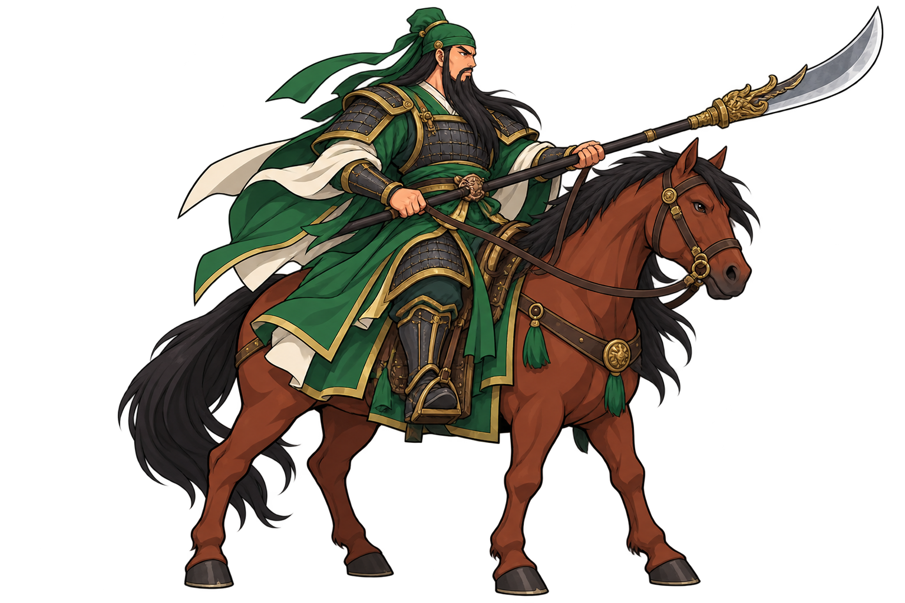
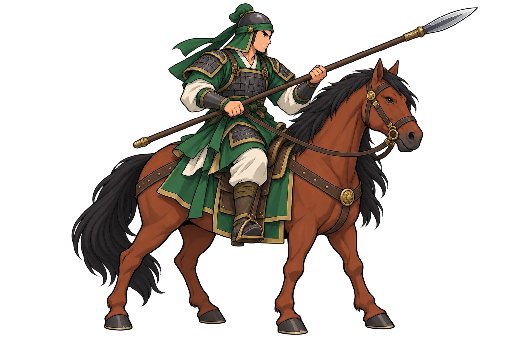

전투 아트 · 검토용 v1
관우와 공용 기병
기존 보병과 같은 화풍의 기마 시안입니다. 아래 크기는 검토용이며, 게임의 병종·장수 데이터에는 반영하지 않았습니다.
보병과 크기 비교
유비 86px / 관우 선택 크기 / 공용 기병은 관우의 약 79%. 머리부터 지면까지 기준이며 긴 무기는 포함하지 않습니다.
6대6 전장 배치 검토
실제 전장의 96px 행 간격과 장수 1명 + 병사 3명 배치를 사용합니다. 가운데 전열에 관우 군단을 두어 인접 군단과 겹침을 비교합니다. 나머지 군단은 간격 검토용 반복 배치입니다.
관우 · 기마 기본 자세

녹색 전포·긴 수염·언월도·적갈색 말은 이번 시안의 해석입니다.
공용 기병 · 기본 자세

일반 기병은 투구·창으로 장수와 구분합니다. 말과 장비 색은 최종 확정 전입니다.
그림을 불러오는 중…
규격·검토 항목 · 제작 프롬프트 · 기존 보병 비교